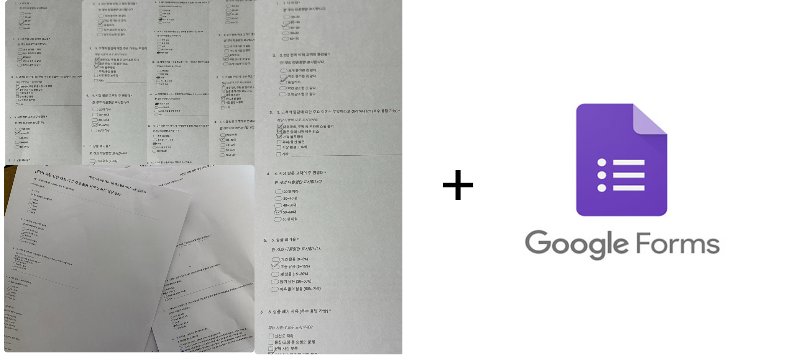
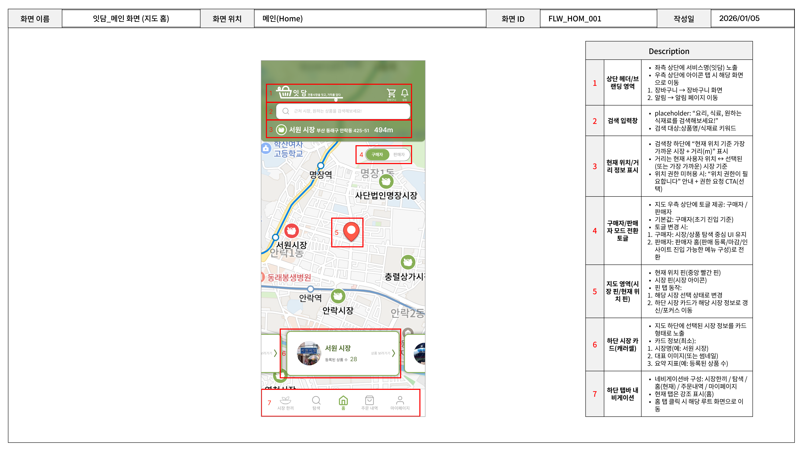
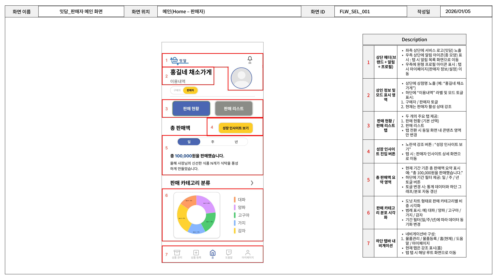
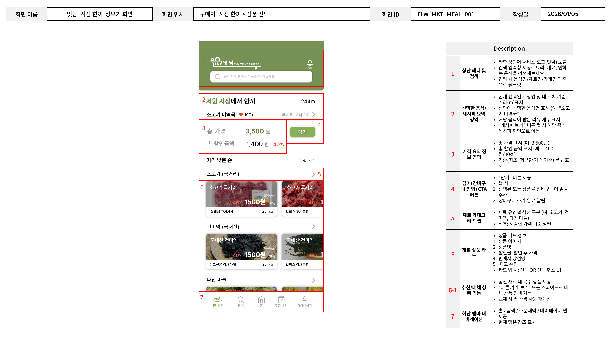
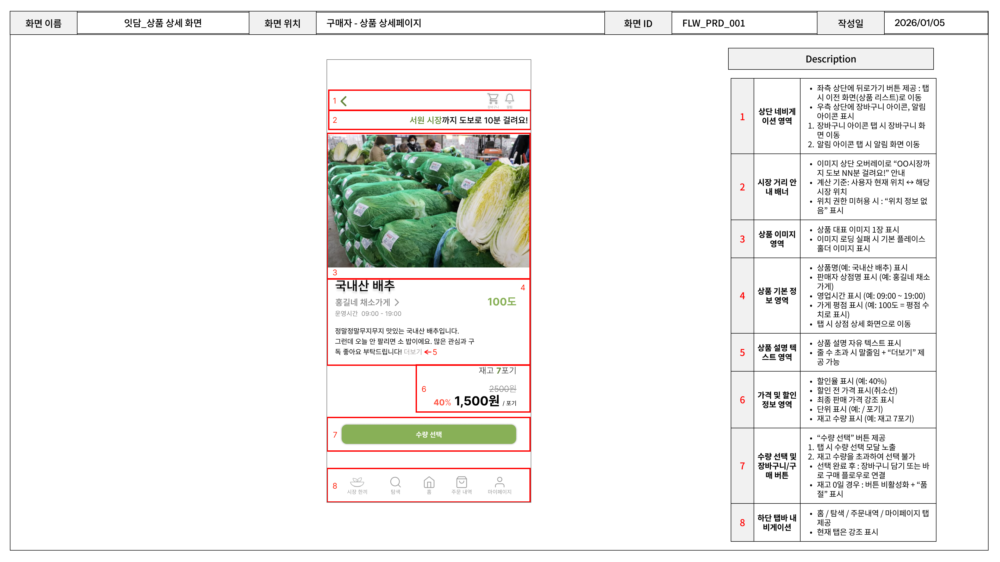
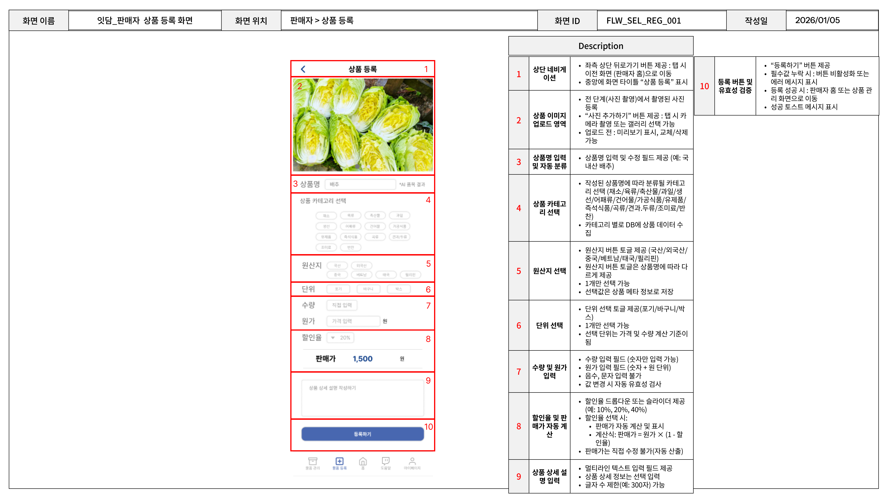
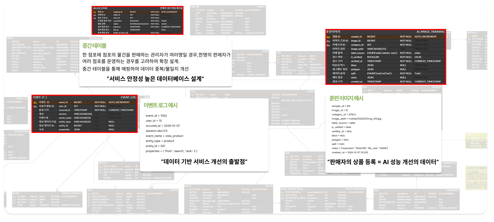

현장 방문
시장에 직접 방문해 점포를 둘러보는 과정에서 상인에게 설문 참여를 요청했습니다.
UI/UX Design · Product Management · O2O · 2025—2026
버려질 상품에서, 팔릴 수 있는 상품으로
전통시장에서 오늘 팔리지 못한 신선식품을, 폐기되기 전 근처 소비자와 연결하는 위치기반 O2O 플랫폼입니다. 상인이 사진 한 장으로 상품을 올리는 순간부터 근처 소비자가 찾아와 수령하기까지를 하나의 흐름으로 연결했습니다.
83명
시장 방문 상인 설문 34명 · 소비자 온라인 설문 49명
88건
기능 · 정책 · 보안 · 데이터 · 성능 5개 요구사항 유형
15명
원격 모더레이티드 · 1인 30분 · 사전 합격선 기준 판정
ITDAM · LOCAL MARKET CONNECTION
오늘 남은 상품이,
이웃의 한 끼로 이어지도록.
마감 20분 전의 상품을, 퇴근길 30분 안으로
01Problem
매출은 늘었는데, 고객은 줄고 있었습니다
전통시장이 어렵다는 이야기는 익숙합니다. 그래서 처음 세운 가설도 평범했습니다. “사람이 안 와서 어렵다.”
그런데 통계를 열어보니 이상했습니다. 시장당 일평균 매출액은 2023년까지 꾸준히 올랐습니다. 그 상승을 이끈 건 식품 업종이었습니다. 2019년 대비 농수축산물이 63%, 음식점이 44% 늘었습니다. 반면 방문 고객 수는 팬데믹 이후 반등하지 못하고 계속 떨어졌습니다. 5년 사이 26% 감소했습니다.
같은 시장에서 매출은 오르고 방문객은 줄고 있었습니다. 이 통계만으로 신규 고객의 유입이나 매출 증가의 원인을 알 수는 없었습니다. 그래서 방문객 수를 늘리는 문제와 별도로, 현재 시장에 있는 상품을 더 잘 판매할 방법을 살펴봤습니다.
| 전국 전통시장 수 | 시장당 일평균 고객 | 영업 점포 | 빈 점포 | 식품 취급 업종 |
|---|---|---|---|---|
| 1,408 → 1,393개 | −26% (5년) | −8.09% (2013→2023년) | +16.57% (2013→2023년) | 49.7% |
−8.09%
2013→2023년 감소+16.57%
2013→2023년 증가전통시장 점포의 절반은 식품을 팝니다. 그리고 식품은 시간이 지날수록 가치가 떨어지는 상품입니다.
식품 점포에서는 방문객 수뿐 아니라 판매 가능한 시간 안에 재고를 팔 수 있는지도 중요하다고 보았습니다. 점포 감소의 원인을 이 통계로 단정하기보다, 당일 미판매 재고에 소프트웨어로 개입할 수 있을지 가설을 세웠습니다.
앞의 질문은 이번 팀이 다룰 범위를 넘는 문제였고, 뒤의 질문은 소프트웨어로 개입할 수 있는 문제였습니다.
세 갈래의 불편을 각각 네 번씩 파고들었습니다. 표면의 증상에서 멈추지 않고, 구조적인 원인이 나올 때까지 질문을 이어갔습니다.
| Pain Point 1 | Pain Point 2 | Pain Point 3 |
|---|---|---|
| 점점 줄어드는 전통시장 이용객 | 매출의 불균형 | 식품 점포의 재고 관리 한계 |
| 구매 경험의 불확실성 정보 디지털화 부족 |
신뢰 신호 누적에 따른 승자독식 비교 비용이 높은 시장 환경 |
시간 경과에 따른 가치 하락 재고 관리 인사이트 부족 |
| 이용객 감소 | 매출 불균형 | 재고 관리 한계 | |
|---|---|---|---|
| Why 1 | 젊은 세대는 가격이 투명하고 비교가 쉬운 디지털 플랫폼에 익숙해, 전통시장을 구매 경험이 불확실한 공간으로 인식한다. | 시장 내 구매가 일부 점포에 집중되고, 나머지 점포는 고객 접점이 부족해 매출 격차가 벌어진다. | 당일에 판매되어야 하는 식품이 팔리지 않고 남으면 판매 가능성이 급격히 낮아진다. |
| Why 2 | 온라인과 달리 가격·재고·품질을 사전에 확인할 방법이 없어, 방문 전 판단에 필요한 정보가 부족하다. | 오프라인에서는 “어디서 살지”를 정할 때 눈에 보이는 위치·간판·붐빔이 판단 근거가 되어, 사람이 많은 곳을 우선 선택한다. | 시간이 지날수록 신선도·상품성이 떨어지고, 구매 매력도가 함께 낮아진다. |
| Why 3 | 바가지 우려, 서비스 편차, 카드 결제 가능 여부 등 불확실 요소가 남아 “가봐야 안다”는 상황이 반복된다. | 전통시장에는 점포·상품 정보를 비교할 노력이 들기 때문에, 선택의 불확실성을 줄이려 '사람이 많다'는 신호에 의존해 결정한다. | 당일 수요를 예측하기 어려워 판매량 예측이 빗나가고, 그 결과 필요 이상의 재고가 자주 발생한다. |
| Why 4 | 시장 방문 전에 핵심 정보가 한눈에 확인 가능한 형태로 표준화되어 공개되지 않아, 소비자가 스스로 비교·검증해야 한다. | 한 번 형성된 신호는 그 자체가 다시 강한 신뢰 신호가 되어 신규 고객을 유입시키고, 격차가 시간이 지날수록 벌어진다. | 대형마트·온라인 쇼핑은 판매·재고 데이터를 기반으로 수요를 예측하지만, 전통시장은 품목·판매 기록이 체계화되지 않아 근거로 쓸 데이터가 부족하다. |
| 근본 원인 |
구매 경험의 불확실성 전통시장 정보의 디지털 활용 부족 |
신뢰 신호 누적에 따른 승자독식 비교 비용이 높은 시장 환경 |
시간 경과에 따른 가치 하락 재고 관리 인사이트 부족 정보 노출 채널 부족 |
세 갈래는 결국 한 곳에서 만났습니다. 팔 수 있는 상품이 있는데, 그 정보가 어디에도 없다는 점이었습니다.
02Market
아무도 규모를 모르는 문제였습니다
문제를 정했으니 크기를 알아야 했습니다. 얼마나 버려지고 있는지, 그중 얼마가 팔릴 수 있었던 것인지.
그런데 그 숫자가 없었습니다. 국가 음식물 폐기물 통계는 '버려질 수밖에 없던 폐기물'과 '팔릴 수 있었는데 못 판 상품'을 구분하지 않습니다. 둘이 한 덩어리로 잡히니, 공개 통계만으로는 우리가 풀려는 문제의 규모를 따로 파악하기 어려웠습니다. 실제 거래로 연결할 수 있는 물량은 별도로 확인해야 했습니다.
정확한 값을 찾는 걸 포기하고, 판단이 가능한 자릿수를 얻는 것으로 목표를 바꿨습니다. 공개된 통계만으로 역산하는 수식을 세 단계로 세웠습니다.
약 517,282개
도·소매 460,193 × 식품 비중 55%
+ 숙박·음식점 352,235 × 식품 비중 75%
약 110,919t / 년
전국 폐기물 336,520t
× (전통시장 점포 347,959 × 신선식품 비율 49% ÷ 517,282)
약 20.6억 원 / 년
110,919t × 목표 전환율 60% × 소비 가능 비율 20%
× 음식물 처리비 155,000원/t
출처: 고용노동부 전국 산업별 사업체수(2023), 기후에너지환경부 폐기물 발생 및 처리현황(2023), 소상공인시장진흥공단 전통시장 현황(2023), 한국음식물류폐기물자원화협회 처리비용 산정 참고자료, UNEP Food Waste Index Report(2021) 조합
①의 계산값은 517,282.4개이며, ②에는 반올림한 517,282개를 사용했습니다. ②는 약 110,919t, ③은 약 20.6억 원으로 계산됩니다. 중간 반올림에 따라 끝자리는 달라질 수 있습니다. 업종별 폐기량이 사업장 수에 비례한다는 가정과 전환율 60%·소비 가능 비율 20%를 적용한 시나리오 추산입니다. 실제 절감 실적이나 플랫폼 매출과는 구분합니다.
수식 ③의 판매 전환율 60%는 초기 검증을 위한 가정 목표입니다. 실제 운영으로 달성 가능성을 확인한 값은 아니며, 시장 규모 추산에도 같은 가정을 적용했습니다.
같은 수치를 사용했다고 목표의 타당성이 입증되는 것은 아닙니다. 초기 운영에서 실제 전환율을 측정한 뒤, 목표와 추산값을 함께 조정할 계획입니다.
전체 잠재 고객 중 서비스와 관련이 높은 집단을 가정해 퍼널로 좁혔습니다. 아래 수치는 초기 6개월의 이용자 확보 목표가 아니라, 전국 단위의 잠재 고객 추정입니다. 초기 실증은 사업계획서의 3~5개 시장 범위에서 별도로 검증할 계획입니다.
전통시장에 접근이 가능하며 식재료를 구매하는 인구
가격에 민감하고 전통시장 이용 가능성을 가진 인구
절약·소용량 구매를 선호하고 문제 정의에 공감하는 고객군
전통시장 디지털 구매를 수용할 수 있는 층
서비스 이용 가능성을 가정한 잠재 고객
막대 길이는 TAM 대비 비율입니다. 각 단계는 가정에 따른 추정이며, 약 30만 명은 초기 실사용자 수나 확보 목표를 의미하지 않습니다.
경쟁 서비스를 두 축 위에 올려봤습니다. 정가 판매와 마감 특가, 그리고 전국·도매와 지역·소매.
| 온라인 전통시장 · 네이버 동네시장 · 당근마켓 | 라스트오더 · 식자재마켓 | Too Good To Go · Flashfood · OLIO |
|---|---|---|
| 전통시장을 온라인에 올리지만 당일 재고 손실은 다루지 않음 | 마감 상품을 다루지만 음식점·B2B 중심 | 모델은 검증됐지만 대형마트·프랜차이즈에 적용 |
전통시장 × 신선식품 × 폐기 직전. 세 조건이 겹치는 자리는 비어 있었습니다. '어디서 팔 것인가'를 다루는 서비스는 많았지만, '사라지기 직전의 상품을 전통시장에서 어떻게 연결할 것인가'를 다루는 서비스는 없었습니다.
03Research
필요한 답이 어느 자료에도 없었습니다
시장 규모는 계산했지만, 정작 서비스를 설계하려니 막혔습니다. 상인이 하루에 얼마나 남기는지, 스마트폰을 어디까지 다루는지, 추가 판매 채널을 원하기는 하는지. 어느 자료에도 없었습니다. 기존 리서치는 대부분 정책·산업 관점이라 시설 현대화율이나 지원사업 참여율 같은 숫자만 있었습니다.
특히 걸린 건 평균 60.8세라는 상인
연령이었습니다. 이 숫자만 보면 “앱은 무리”라는 결론이
자연스러운데,
그 결론이 맞다면 서비스 자체가 성립하지 않습니다.
책상에서 판단할 문제가 아니었습니다.
확인하고 싶은 것을 여섯 개로 정리하고, 상인용·소비자용 질문지를 직접 만들었습니다.
| 상인에게 | 소비자에게 |
|---|---|
| 미판매·폐기가 실제로 생기는가 | 전통시장에 갈 때 뭐가 불편한가 |
| 추가 판매 채널이 필요한가 | 가격·재고를 미리 알면 갈 의향이 생기는가 |
| 스마트폰을 어디까지 쓰는가 | 마감 할인 상품에 거부감이 있는가 |
문제는 응답자를 어떻게 모으느냐였습니다. 장사 중인 상인에게 설문을 부탁하는 일은 온라인 모집으로 해결되지 않습니다. 그래서 네 가지 경로를 동시에 열었습니다.
시장에 직접 방문해 점포를 둘러보는 과정에서 상인에게 설문 참여를 요청했습니다.
시장 내 점포를 운영하는 지인에게 부탁해 상인회 안에서 참여자를 연결받았습니다.
교회를 함께 다니는 시장 상인에게 요청해 추가 참여를 확보했습니다.
Google Forms로 만든 질문지 링크를 공유해 소비자 응답을 모았습니다.
그 결과 상인 34명, 소비자 49명의 응답을 모았습니다. 장사 중인 분들이라 짧게 묻고, 대신 옆에서 관찰했습니다.

상인 응답은 현장 방문과 지인·커뮤니티 연결을 함께 사용했기 때문에 무작위 표본은 아닙니다. 통계적 대표성보다 현장의 실제 조건을 확인하는 데 목적이 있었습니다.
첫째, 소비자는 전통시장을 싫어하지 않았습니다. 불편하다고 꼽은 건 주차·동선과 가격 정보가 명확하지 않다는 것이었습니다. 공간이 싫은 게 아니라 가보기 전에 알 수 없는 것이 문제였습니다.
둘째, 상인은 스마트폰을 못 쓰지 않았습니다. 대다수가 일상적인 사용에는 무리가 없다고 답했습니다. 상인이 꼽은 고객 감소 원인 1위는 대형마트·온라인 쇼핑의 증가 (79.4%)였고, 폐기 직전 상품을 알릴 수 있는 서비스가 있다면 쓰겠다는 응답이 79%였습니다.
폐기 직전 상품을 알릴 수 있는 서비스가 있다면 쓰시겠습니까? 상인 34명
긍정 79%
매우 있음 47% · 어느 정도 32% · 보통 18% · 별로 없음 3%
가격·재고를 방문 전에 확인할 수 있다면 시장에 가서 구매하시겠습니까? 소비자 49명
긍정 59%
매우 있음 16% · 어느 정도 43% · 보통 31% · 별로 없음 8% · 전혀 없음 2%
설문에서는 판매와 구매에 대한 의향을 확인했습니다. 다음 과제는 그 의향이 실제 등록과 구매로 이어질 수 있는 흐름을 만드는 것이었습니다.
이 두 문장이 이후 모든 기능 결정의 기준이 되었습니다. 다만 83명의 응답은 표 안에 있으면 아무것도 결정해주지 못합니다. 숫자를 사람으로 옮기는 작업이 다음 단계였습니다.
04Persona
두 사람의 시간 안에서 작동해야 했습니다
리서치 결과 중 앱으로 해결 가능한 불편만 골라 페르소나를 만들었습니다. 그리고 각각의 하루에서, 서비스가 끼어들 수 있는 구간이 몇 분인지부터 확인했습니다.
퇴근 18시, 아이 하원 후 쓸 수 있는 시간 30분. 배달은 싫고 마트는 동선 밖입니다.
오후 5시 30분부터 남은 재고를 처리할 20분. 급히 팔려 해도 알릴 방법이 없습니다.
예산은 집행하는데 효과를 증명할 데이터가 없습니다. 미판매·폐기 규모가 통계로 안 잡힙니다.
페르소나를 설명글로 두지 않고,
단계 → 니즈 → 행동 → 실현 기능 네 열로
분해했습니다.
시나리오가 그대로 요구사항으로 넘어가게 만들기
위해서였습니다.
김지현의 30분
| 시각 | 행동 | 실현 기능 |
|---|---|---|
| 18:00 | 현재 위치 기준으로 앱을 연다 | 위치 기반 시장 추천 |
| 18:03 | 근처 4개 점포의 마감 할인을 한 번에 본다 | 마감 할인 점포 모아보기 |
| 18:05 | 고등어 2팩이 7,000원 → 4,500원인 걸 확인한다 | 상품 이미지·중량·재고, 정가·할인가 비교 |
| 18:09 | 매장에서 지갑 꺼낼 필요 없이 미리 결제한다 | 간편결제, 픽업 시간 안내 |
| 18:30 | 아이와 가는 길에 들러 받는다 | 픽업 완료 처리 |
이창수의 마감 준비 20분과 이후 픽업
| 시각 | 행동 | 실현 기능 |
|---|---|---|
| 17:30 | 고등어 2박스가 남은 걸 확인한다 | 마감 시간 기반 등록 유도 |
| 17:33 | 사진을 찍고 종료 시간·원가·할인율을 입력한 뒤 계산된 판매가를 확인한다 | AI 자동 분류, 원가·할인율 넣으면 판매가 자동 계산 |
| 17:35 | 버튼 한 번으로 등록이 끝난다 | 즉시 판매 노출 |
| 17:45 | “1개 판매됨” 알림을 받는다 | 실시간 판매 알림, 재고 자동 반영 |
| 18:30 | 찾아온 손님에게 건넨다 | 픽업 확인·판매 완료 |
마감 준비 시간은 17:30–17:50의 20분으로 설정했습니다. 상품 등록·판매 확인 뒤, 18:30 픽업 전달은 별도 단계로 구분했습니다.
등록은 3분, 구매자의 탐색·비교는 5분 안에 마치는 것을 설계 목표로 두었습니다. 이후 테스트에서는 구매 전체와 구분해, 탐색부터 장바구니 담기까지의 핵심 과업에 1분 기준을 설정했습니다. 이는 설계·평가 기준이며, 달성한 소요 시간으로 제시한 값은 아닙니다.
김지현과 이창수만으로도 서비스는 성립합니다. 그런데 박정민을 넣었습니다.
전통시장 활성화 예산은 매년 집행되지만, 효과를 증명할 데이터가 없어 사업이 시설·행사 중심으로 반복된다는 걸 리서치에서 확인했기 때문입니다. 잇담이 쌓는 거래·미판매 데이터는 지자체와 상인회가 근거로 쓸 수 있는 자료가 됩니다.
이 페르소나가 나중에 수익 모델의 세 번째 단계(08장)와 사업계획서의 B2G 시나리오(09장)로 이어졌습니다.
05Prioritization
후보는 10개였고, 팀은 3명이었습니다
기능 아이디어는 계속 나왔습니다. 배송, 픽업존, 보관법 안내, 개인화 추천. 문제는 짧은 시간과 개발 인력이었습니다. 무엇을 만들지가 아니라, 무엇을 만들지 않을지를 먼저 정해야 했습니다.
E-커머스라면 당연히 있어야 하는 기능(회원가입·결제·장바구니)은 아예 후보에서 뺐습니다. 그건 잇담이 잘해서 얻는 점수가 아니기 때문입니다. 잇담만의 기능 10개만 남겨 RICE로 점수를 매겼습니다.
| 1위 · 시장한끼 | 2위 · AI 상품 등록 | 3위 · 전통시장 배송 |
|---|---|---|
| 한 끼 재료를 한 번에 | 사진 한 장으로 등록 | 집까지 배달 |
| 7.2 | 4.05 | 3.5 |
배송은 점수가 상위권이었고, 사용자들이 가장 원하는 기능이기도 했습니다. 그런데 뺐습니다.
Effort가 5였습니다. 6주 안에 되는 일이 아니었고, 무엇보다 배송비와 신선도 관리 부담이 전통시장이라는 환경과 정면 충돌했습니다. 이미 시장에는 배송으로 신선식품을 파는 서비스가 많았고, 그들이 전통시장에 들어오지 못한 이유가 정확히 그것이었습니다. 같은 이유로 픽업존도 뺐습니다. 둘 다 외부 협약이 전제인 기능이었습니다.
심화 인사이트와 구독 관리도 MVP 이후의 최종 업데이트로 배치했습니다. 가게·시장별 판매를 비교하고 수요를 분석하려면, 서비스 운영을 통해 거래·판매 데이터가 먼저 쌓여야 하기 때문입니다. 초기에는 기본 판매 현황을 제공하고, 분석에 필요한 데이터가 확보된 뒤 심화 인사이트와 구독 기능을 도입하는 계획으로 정리했습니다.
팀 안에서 의견이 갈린 것도 이 지점이었습니다. 배송은 설문에서 가장 많이 요청된 기능이었고, 이걸 빼면 발표에서 내세울 차별점이 약해진다는 우려가 있었습니다. 저도 같은 걱정을 했습니다. 대신 점수를 다시 뜯어봤습니다. 배송의 RICE 점수는 Reach와 Impact가 끌어올린 값이었고, Effort 5는 6주라는 조건에서 사실상 “못 한다”는 뜻이었습니다. 더 걸린 건 다른 지점이었습니다. 배송을 넣는 순간 잇담은 이미 배송으로 신선식품을 파는 서비스들과 같은 링에 서게 됩니다. 우리가 이길 수 있는 자리는 거기가 아니라 '지금 가까운 시장에 남아 있는 상품'이었습니다. 그래서 빼는 대신 옮기기로 합의했습니다. 배송을 로드맵 Update 3에 명시하고, 의사결정 로그에 왜 지금은 아닌지를 남겼습니다. 발표에서도 빠진 기능으로 넘기지 않고, 뺀 이유를 하나의 장면으로 설명했습니다.
우선순위는 점수 순서가 아니라, 지금 이 팀이 감당할 수 있는 범위에 대한 판단이었습니다.
Reach · Impact · Confidence · Effort를 각각 매기고 (R × I × C) ÷ E로 점수를 냈습니다. 회원가입· 결제·장바구니처럼 커머스라면 당연히 있어야 하는 기능은 후보에서 제외하고, 잇담만의 기능 10개만 비교했습니다.
| 순위 | 기능 | R | I | C | E | 점수 | 결정 |
|---|---|---|---|---|---|---|---|
| 1 | 시장한끼 (한 끼 묶음) | 3 | 3 | 0.8 | 1 | 7.2 | MVP 채택 |
| 2 | AI 상품 등록 도우미 | 3 | 3 | 0.9 | 2 | 4.05 | MVP 채택 |
| 3 | 전통시장 상품 배송 | 5 | 5 | 0.7 | 5 | 3.5 | Update 3 · 외부 협약 전제 |
| 4 | 지도 상 점포 위치 표시 | 4 | 2 | 0.8 | 2 | 3.2 | Update 2 · 점포 위치 정보 확보 후 |
| 5 | 심화 인사이트 | 3 | 3 | 0.9 | 4 | 2.0 | 최종 업데이트 · 운영 데이터 축적 후 도입 |
| 6 | 기본 인사이트 제공 | 3 | 2 | 0.9 | 3 | 1.8 | Update 1 |
| 7 | 상품 상세 내용 저장 관리 | 2 | 1 | 0.7 | 1 | 1.4 | Update 1 |
| 7 | 식재료 보관 방법 명시 | 2 | 1 | 0.7 | 1 | 1.4 | Update 1 |
| 7 | 픽업 존 구현 | 2 | 5 | 0.7 | 5 | 1.4 | Update 3 · 외부 협약 전제 |
| 10 | 구매자 상품 추천 기능 | 2 | 2 | 0.8 | 4 | 0.8 | Update 2 |
배송은 Reach 5 · Impact 5로 두 항목 모두 최고점을 받았지만, Effort도 5였습니다. 점수를 끌어올린 것과 실행을 막은 것이 같은 기능 안에 있었습니다.
가로축은 기능을 구현하는 데 드는 노력(자본·시간·난이도), 세로축은 구현했을 때의 이용자 만족도(리서치 기반)입니다.
시장한끼 · 지도 상 점포 위치 · 기본 인사이트
구현 노력 대비 기대 만족도가 높은 구간입니다. 실제 도입 시점은 데이터 확보 조건과 함께 판단했습니다.
상품 상세 저장 · 식재료 보관 · AI 등록 고도화
노력이 적으니 빠르게 붙여보고 반응을 확인할 수 있습니다. 심화 인사이트는 운영 데이터가 필요하므로 최종 업데이트로 구분했습니다.
구매자 상품 추천
기능의 존재 가치 자체를 다시 판단할 필요가 있는
구간입니다.
배송 · 픽업 존
자원이 많이 필요하지만 만족도는 높은 구간. 장기 플랜에
적합합니다.
배송과 픽업 존이 같은 사분면에 있었습니다. 둘 다 만들면 좋지만 지금은 감당할 수 없는 기능이라는 뜻이었고, 그래서 삭제가 아니라 로드맵 Update 3으로 옮겼습니다.
“시장한끼를 만들자”는 개발 착수 지시가 아닙니다. 화면 하나하나, 예외 상황 하나하나가 정해져야 합니다.
시나리오를 쪼개 요구사항 88건으로 정리했습니다. 기능·정책·보안·데이터·성능으로 분류하고, 각 요건에 중요도와 구현 방식을 붙였습니다. 그리고 마지막 칸에 MVP 또는 Update 1, 그리고 그 이유를 적었습니다.
REQ_G-06 마감 상품 노출 우선순위
→ 상품 정렬 로직에 마감 가중치 적용
→ MVP (폐기 감소 목적)
목적을 함께 적어두면, 일정이 밀렸을 때 무엇을 먼저 자를지 판단할 근거가 남습니다.
01 · 초기 출시
처음부터 필요한 것
초기 출시 범위로 선정한 요구사항입니다. 각 요건에 구현 방식과 MVP에 포함하는 이유를 함께 적었습니다.
마감 상품 노출 우선순위
상품 정렬에 마감 가중치 적용
02 · 운영 이후
운영 후 판단할 것
서비스가 돌아가기 시작한 뒤 판단할 수 있는 요구사항은 후속 범위로 배치했습니다.
운영 리스크 관리 · 분쟁 처리
전환율 개선
요구사항 정의서의 최종 분류는 MVP 78건·Update 1 10건입니다. 아래 로드맵은 기능 도입 조건에 따른 순서이며, 심화 인사이트·구독 관리는 운영 데이터가 충분히 쌓인 마지막 단계에 배치했습니다. 실제 개발·출시 전의 계획입니다.
강조된 세 그룹이 잇담만의 기능입니다. 마감(G), 레시피(N), 심화 인사이트(R). 나머지 열네 그룹은 커머스라면 갖춰야 하는 기본기였고, 개발 순서를 정할 때도 이 구분이 기준이 됐습니다.
| 요건 ID | 요구사항명 | 적용 방안 | 우선순위 |
|---|---|---|---|
| REQ_A-02 | 사용자 유형 선택 및 분기 | 사용자 Role 필드 분리, 화면 접근 제어 | MVP (IA 분기 기준 핵심) |
| REQ_G-06 | 마감 상품 노출 우선순위 | 상품 정렬 로직에 마감 가중치 적용 | MVP (폐기 감소 목적) |
| REQ_H-01 | 상품 등록 | 상품 등록 폼 및 필수값 검증 | MVP (판매자 핵심 기능) |
| REQ_N-01 | 레시피 기반 상품 추천 | 레시피–식재료 매핑 테이블 + 판매 중 상품 필터링 | MVP (시장한끼 핵심 로직) |
| REQ_M-04 | 서비스 품질 지표 관리 | 핵심 KPI 정의 및 집계 | MVP (개선 판단 근거) |
| REQ_R-06 | 심화 인사이트 구독 관리 | 운영 데이터 축적 후 구독 상태·접근 권한 관리 | 최종 업데이트 · 분석용 데이터 확보 후 도입 |
| REQ_G-04 | 마감 임박 상품 강조 | 시간 임계값 기준 강조 UI 적용 | Update 1 (전환율 개선 요소) |
| REQ_B-05 | 제재·복구 프로세스 관리 | 제재 상태 코드 관리, 기간 기반 자동 해제 | Update 1 (운영 리스크 관리) |
06Design
구매자와 판매자가 결정해야 하는 순간을 화면으로 연결했습니다
구매자는 짧은 시간 안에 살 상품과 방문할 시장을 고르고, 판매자는 마감 전에 남은 상품을 등록하고 관리해야 합니다. 다섯 가지 핵심 흐름에서 필요한 정보와 다음 행동이 어떻게 이어지는지 정리했습니다.
01 / 메인·주변 시장 탐색
구매자·판매자 토글로 역할별 홈과 메뉴를 전환합니다. 구매자는 주변 시장을 탐색하고, 판매자는 판매 현황과 상품 관리를 이어갈 수 있도록 구성했습니다.
하나의 앱에서 역할을 바꾸고, 필요한 행동을 바로 찾을 수 있을까요?
구매자·판매자 토글을 공통 진입점으로 두었습니다. 구매자는 지도와 시장 상품을, 판매자는 판매 현황과 상품 관리를 보도록 홈과 하단 메뉴를 함께 전환합니다. 판매자 홈에서는 판매 현황·판매 리스트와 기간별 금액을 살펴보고 상품 등록·관리로 이동할 수 있습니다.
지도에서는 시장 핀과 현재 위치를 구분하고, 시장을 선택하면 하단 카드의 이름·거리·상품 미리보기가 바뀝니다. 어디에 있는지와 무엇을 살 수 있는지를 같은 화면에서 판단하도록 구성했습니다. 검색과 필터로 탐색 범위를 좁히고 관심 시장을 저장할 수도 있습니다.
카드의 ‘마감 상품 보기’를 누르면 선택한 시장의 상품 목록으로 이어집니다. 목록은 할인율 높은 상품·마감 임박·평점 높은 가게로 나눠 구매 기준을 구분했습니다. 시장 안에서는 상품 검색과 전체 보기를 사용하고, 뒤로 가면 다시 지도로 돌아갑니다.
02 / 판매자 상품 등록
사진 촬영부터 정보 입력, 최종 확인과 완료까지 연결했습니다. 화면 안에서 직접 입력하거나, 오른쪽 단계 버튼으로 각 화면을 확인할 수 있습니다.
사진으로 입력 부담을 줄이면서도, 판매자가 정보를 확인하고 등록할 수 있을까요?
사진을 중앙에 선명하게 담도록 안내한 뒤 촬영 또는 앨범 선택으로 등록을 시작합니다. 인식된 상품명은 수정할 수 있는 입력값으로 두어 자동 입력을 판매자가 확인하는 단계를 남겼습니다. 현재 시안의 촬영은 예시 사진으로 진행하며 실제 AI 인식과 구분합니다.
카테고리·원산지·판매 단위는 선택형으로, 수량·할인 전 가격은 숫자 입력으로 구성했습니다. 외국산을 선택하면 국가를 고르고, 할인율과 판매 기간도 설정합니다. 할인 전 가격과 할인율을 바꾸면 판매가가 자동으로 갱신되어 계산 부담을 줄입니다.
‘등록 전 확인하기’에서 사진·상품명·가격·수량·판매 기간·설명을 모아 보여줍니다. 수정이 필요하면 입력 화면으로 돌아가고, 등록하면 완료 화면에서 상품을 다시 확인하거나 다른 상품 등록을 시작할 수 있습니다. 입력 완료와 최종 등록을 구분해 확인할 기회를 제공합니다.
03 / 시장한끼
무엇을 살지 정하지 못한 구매자에게는 개별 상품 목록만으로 장보기를 시작하기 어렵습니다. 메뉴를 진입점으로 삼고, 필요한 재료를 묶어 확인한 뒤 상품을 비교·선택하도록 했습니다.
먹고 싶은 메뉴를 고른 뒤, 레시피와 필요한 재료 구매로 이어갈 수 있을까요?
첫 화면은 시장별 메뉴를 모아 보여줍니다. 시장을 먼저 고르거나 메뉴를 바로 선택할 수 있고, 메뉴 검색으로 선택지를 좁힙니다. 상품명을 알아야 시작할 수 있는 장보기에서 메뉴를 고르는 장보기로 진입점을 넓혔습니다.
메뉴별 화면에서 필요한 재료를 확인한 뒤 ‘레시피 보기’ 또는 ‘필요한 재료 한 번에 고르기’를 선택합니다. 레시피에서는 조리 순서를 살펴보고 재료 선택으로 이동합니다. 조리법을 먼저 알아보는 사람과 바로 장보려는 사람의 경로를 나눴습니다.
재료별로 판매 점포·가격·재고가 다른 상품을 비교하고 하나씩 선택하도록 했습니다. 정렬 기준을 바꾸거나 상품을 교체하면 총 상품 금액과 할인 금액이 함께 갱신됩니다. 담기 완료 뒤에는 장바구니를 확인하거나 메뉴 탐색을 계속할 수 있습니다. 여러 점포의 픽업 동선까지 해결한 것은 아니며, 상세 체험은 소고기 미역국 기준입니다.
04 / 상품 확인과 구매
구매자는 할인 폭이 커도 상품의 단위·남은 수량·가게 위치를 알 수 없으면 구매를 결정하기 어렵습니다. 상품 정보와 점포 정보를 함께 제공하고, 수량 선택 이후 결제 또는 장바구니로 이어지도록 구성했습니다.
상품의 조건과 수량을 이해하고, 선택한 상품만 결제 단계로 넘길 수 있을까요?
상품 사진과 원산지, 점포·영업시간·거리, 판매 단위·재고를 함께 제공합니다. 할인 전 가격과 할인율·판매가를 구분해 얼마에 어느 정도의 양을 사는지 판단하도록 했습니다. 관심 상품 저장과 장바구니 진입도 상세 화면에서 가능합니다.
수량 선택은 하단 창에서 진행합니다. 재고 범위 안에서 수량을 바꾸면 상품 금액도 즉시 바뀝니다. 바로 구매와 장바구니 담기를 분리해 하나만 구매할 때와 다른 상품을 함께 고를 때의 경로를 구분했습니다.
장바구니에서는 전체·개별 상품 선택과 수량 조절이 가능합니다. 선택된 상품만 합산해 총액과 할인 금액을 보여주고 결제 수단 선택으로 넘깁니다. 바로 구매는 해당 상품의 수량만 반영합니다. 결제 전 금액과 선택 대상을 다시 확인하도록 했으며, 시안에서는 실제 결제와 주문을 진행하지 않습니다.
05 / 판매 종료와 재고 관리
일부 상품만 판매를 끝낼 때와 가게의 영업을 마칠 때는 종료 범위가 다릅니다. 상품 단위 종료와 점포 단위 일괄 마감을 나누고, 마감 이후에는 구매자가 판매 중으로 오해하지 않도록 상태를 보여줍니다.
상품 하나와 가게 전체의 마감 범위를 혼동하지 않고 확인할 수 있을까요?
개별 상품 상세에서는 ‘이 상품 마감하기’, 가게 상품 목록에서는 ‘판매 상품 일괄 마감’을 사용합니다. 상품 하나를 종료하는 행동과 가게 전체를 종료하는 행동의 진입점을 분리했습니다.
개별 마감은 상품명과 남은 수량, 일괄 마감은 가게명과 판매 중인 상품 수를 표시합니다. 새 구매가 불가능해진다는 영향을 함께 안내하고, ‘돌아가기’와 ‘상품 마감하기·모두 마감하기’를 구분해 실행 전에 범위를 점검하도록 했습니다.
개별 마감 뒤에는 해당 상품에 판매 종료를 표시하고 다른 상품의 판매는 유지합니다. 일괄 마감 뒤에는 판매할 상품이 없는 ‘상품 준비 중’ 상태를 보여줍니다. 가게 소개와 영업시간은 그대로 남겨 상품 판매 상태와 점포 정보를 구분합니다.
상인 대부분은 소비자이기도 합니다. 그런데 앱을 두 개 설치하게 하는 건 60대 사용자에게 가장 큰 이탈 지점이라고 봤습니다.
그래서 별도 앱이 아니라 메인 화면 상단의 토글 하나로 역할을 전환하는 구조로 IA를 짰습니다. 진입점은 공유하되, 역할별 메뉴와 작업 흐름은 분리하는 방식입니다.
공통 랜딩 → 메인
서비스 소개 4단계를 거쳐 메인으로 들어오고, 상단 토글 하나로 역할을 전환합니다.
구매자 주요 메뉴 6개
탐색
시장 카드 · 검색 결과 · 조건 필터
상품 상세
마감 시간 · 잔여 수량 · 정가·할인가
시장한끼
메뉴 선택 · 재료 자동 구성 · 점포별 교체
구매
장바구니 · 결제 · 픽업 확인
마이페이지
구매 내역 · 관심 상품 · 관심 가게
알림
거래 상태 · 마감 임박
판매자 주요 메뉴 6개
판매자 랜딩
이용 안내 4단계
상품 등록
사진 촬영 · AI 분류 · 원가·할인율 입력
상품 관리
판매 중 상품 · 마감 설정 · 재고 수정
심화 인사이트
상권 비교 · 가격 전략 · 구독 관리
마이페이지
가게 정보 · 도움말
알림
판매 발생 · 픽업 요청
두 역할은 공통 진입점에서 토글로 전환합니다. 앱을 두 개 설치하지 않아도 되면서, 각 역할 안에서는 필요한 메뉴와 작업 흐름에 집중하도록 구성했습니다.
구매자용(초록)과 판매자용(주황) 영역을 분리해 제작했고, 아래쪽 공통 랜딩에서 두 흐름이 만납니다.

화면 설계서를 쓸 때 정상 흐름보다 예외 흐름을 먼저 정의했습니다. 개발 중에 되묻게 되는 지점이 거기고, 그때 생기는 커뮤니케이션 비용이 일정을 가장 많이 잡아먹는다고 판단했습니다.
| 위치 권한을 거부하면 | 재고가 0이면 | 이미지가 안 뜨면 | 설명이 길면 |
|---|---|---|---|
| 안내 문구 + 권한 요청 CTA 상세에서는 “위치 정보 없음” |
수량 선택 비활성화 “품절” 표시 |
기본 플레이스홀더 | 상품 설명 입력 최대 500자 |
화면마다 영역을 번호로 나누고, 각 영역이 무엇을 보여주고 어떤 조건에서 어떻게 동작하는지를 적었습니다. 아래는 메인 화면 설계서의 정의입니다.
| No | 영역 | 정의 |
|---|---|---|
| 1 | 상단 헤더 · 브랜딩 | 좌측에 서비스명 노출 · 우측 아이콘 탭으로 장바구니와 알림 화면 이동 |
| 2 | 검색 입력창 | placeholder “요리, 식료, 원하는 식재료를 검색해보세요!” · 검색 대상은 상품명과 식재료 키워드 |
| 3 | 현재 위치 · 거리 정보 | 가장 가까운 시장과 거리(m) 표시 · 위치 권한 미허용 시 “위치 권한이 필요합니다” 안내와 권한 요청 CTA 제공 |
| 4 | 구매자 · 판매자 모드 전환 | 기본값은 구매자(초기 진입 기준) · 전환 시 각 역할의 홈 화면으로 이동 |
| 5 | 지도 영역 (시장 핀 · 현재 핀) | 현재 위치 핀과 시장 핀 구분 · 핀 탭 시 해당 시장 선택 상태로 변경되고 하단 카드가 갱신 |
| 6 | 하단 시장 카드 (캐러셀) | 선택된 시장을 카드로 노출 · 시장명, 대표 이미지, 등록 상품 수 요약 지표 |
| 7 | 하단 탭바 내비게이션 | 시장한끼 / 탐색 / 홈 / 주문내역 / 마이페이지 · 현재 탭은 강조 표시 |
위 표의 3번이 앞서 정리한 예외 흐름 중 하나입니다. 예외를 따로 모아둔 문서가 아니라, 각 영역의 정의 안에 조건과 함께 적어두었습니다. 개발자가 그 화면을 만들 때 같은 자리에서 보게 하기 위해서였습니다.
구매자 메인, 판매자 메인, 시장한끼 장보기, 상품 상세, 상품 등록 화면의 설계서입니다. 왼쪽에 화면, 오른쪽에 영역별 정의를 나란히 두는 형식으로 통일했습니다.





AI 품목 인식을 고도화하려면 상품 이미지와 정확한 품목 라벨이 필요합니다. 운영 과정에서 이 데이터를 확보할 수 있는 구조를 함께 설계했습니다.
판매자가 확인한 상품 정보를 학습 후보 데이터로 활용할 수 있도록 이미지·상품명·카테고리와 검수 여부를 구분해 저장하는 구조를 설계했습니다. 탐색·구매 행동을 기록할 로그 테이블도 정의했습니다. 데이터가 쌓인 뒤에는 품목 인식 개선 가능성과 폐기 위험 상품의 거래 패턴을 검토할 수 있습니다.
이 판단은 데이터베이스 설계로 이어졌습니다. 전체 22개 테이블 중 세 개가 이 구조를 담당합니다.
라벨 출처와 검수 여부를 분리해둔 이유는, 판매자가 붙인 라벨을 바로 학습에 쓰면 오류가 그대로 누적되기 때문입니다. 모으는 것과 쓰는 것을 다른 단계로 나눴습니다.
event_name = view_product
entity_type = product entity_id = 301
properties = { 'from': 'search', 'rank': 2 }
같은 상품 조회라도 검색에서 왔는지 추천에서 왔는지, 몇 번째 결과였는지가 남습니다. 나중에 “추천이 실제로 구매로 이어졌는가”를 판단하려면 이 맥락이 필요했습니다.
판매자와 점포를 1:1로 묶으면 실제 시장의 운영 형태를 담을 수 없습니다. 중간 테이블로 매핑해 데이터 중복과 불일치를 줄였습니다.
계정·거래·상품·마감·알림·인사이트 도메인을 포함한 전체 구조입니다. 위 세 테이블이 붉게 표시된 부분입니다.

데이터를 모으는 기능이 아니라, 서비스를 쓰면 데이터가 남는 구조를 만든 것이 이 설계의 핵심이었습니다.
07Testing
테스트를 열기 전에 합격선을 먼저 정했습니다
사용성 테스트에서 가장 위험한 건 끝나고 나서 결과를 좋게 해석하는 것입니다. 그래서 프로토타입을 열기 전에, 무엇을 성공으로 볼지부터 숫자로 못 박았습니다.
S1. “당신은 60대 판매자입니다. 처음으로 물품을 등록해주세요”
→ 판매자 토글을 1분 안에 찾으면
Y
→ 등록 완료까지 3분 이하면
Y
기능마다 이런 카드를 만들었습니다. 탐색부터 장바구니 담기까지는 1분, 첫 진입점 도달은 10초였습니다. 성장 인사이트는 기준이 조금 달랐습니다. “1원이라도 낼 의향이 있으면 Y.” 유료 기능이 될 예정이었으니, 좋다는 말은 판정 기준이 될 수 없었습니다.
진행 중에는 힌트도, 유도 질문도 주지 않았습니다. 상황만 제시하고 완료 여부와 소요 시간, 도움을 요청한 횟수, 되돌아간 횟수만 기록했습니다.
| 기능 카드 | 무엇을 보는가 | Y 판정 조건 |
|---|---|---|
| C1. UI/UX 시인성 | 시나리오별 첫 진입점 도달 시간 | Y 10초 이내 N 10초 초과 |
| C2. 랜딩 페이지 이해도 | 랜딩 체험 후 기능 인터뷰 반응 | Y 긍정 N 중립·부정 |
| BC-1. 구매자 물품 구매 | 탐색부터 장바구니 담기까지 시간 | Y 1분 이내 N 1분 초과 |
| BC-2. “시장한끼” 물품 구매 | 기능 사용 후 인터뷰 반응 | Y 긍정 N 중립·부정 |
| SC-1. 성장 인사이트 확인 | 랜딩 확인 후 지불 의향 | Y 1원이라도 낼 의향 있음 N 구매 가치 없음 |
| SC-2. 판매자 물품 등록 | 물품 등록 시작부터 완료까지 시간 | Y 3분 이내 N 3분 초과 |
구매자 시나리오 · 3건
B1“시장한끼”를 통해 소고기미역국 식재료를 구매해주세요.
B2현재 위치와 가장 가까운 시장에서 아무 물품이나 장바구니에 담아 주세요.
B3구매하려고 담아놓았던 장바구니를 확인하고 싶습니다.
판매자 시나리오 · 4건
S1당신은 60대 판매자입니다. 처음으로 잇담을 통해 물품을 등록해주세요.
S2판매가 종료되었습니다. 물품 마감을 해주세요.
S3판매 등록 과정이 기억이 안 납니다. 다시 한번 확인해볼까요?
S4판매자로서 “성장 인사이트” 기능을 찾아 설명을 확인해주세요.
인터뷰 결과지에서 서비스를 즉시 이해한 응답은 15명 중 12명, ‘시장한끼’를 설명할 수 있었던 응답은 15명 중 11명으로 정리됐습니다. 다만 이해하기 쉽다는 반응이, 일상에서 계속 쓰겠다는 뜻은 아니었습니다.
| 확인한 항목 | 결과지에 기록된 응답 | 해석과 한계 |
|---|---|---|
| 서비스 즉시 이해 | 12 / 15명 | 랜딩에서 서비스 개요를 이해한 응답입니다. 과업 성공률과는 구분합니다. |
| 시장한끼 설명 가능 | 11 / 15명 | 기능을 설명할 수 있었던 응답입니다. 실제 구매나 재사용을 입증하지는 않습니다. |
화면 설계와 연결해 볼 때 인상 깊었던 건 구매와 판매에서 각각 지켜야 할 가치가 달랐다는 점입니다. 구매에서는 메뉴를 기준으로 재료를 묶는 방식이, 판매에서는 마감 방식을 선택할 수 있다는 점이 긍정적으로 언급됐습니다. 반면 점포별 픽업과 반복 등록은 여전히 부담으로 남았습니다.
| 흐름 | 긍정 반응과 남은 문제 | 현재 설계에서 보여주는 것 |
|---|---|---|
| 시장한끼 | 레시피 기반 묶음구매가 차별점으로 언급됐습니다. 다만 재료를 받을 매장 위치를 알아야 하고, 여러 점포를 돌아야 한다는 부담도 있었습니다. | 메뉴 → 레시피 → 재료별 상품 선택 → 총액 확인을 연결했습니다. 여러 점포의 픽업 동선 문제까지 해결한 것은 아닙니다. |
| 상품 등록 | AI가 타이핑 부담을 줄여준다는 반응과, 매일 여러 상품을 반복 등록하기 번거롭다는 의견이 함께 있었습니다. | 자동 인식 결과를 확인·수정하고 선택형 입력과 판매가 자동 계산을 사용하도록 구성했습니다. 반복 등록을 줄이는 프리셋은 후속 과제로 남겼습니다. |
| 상품 마감 | 개별·일괄·자동 마감에서 선택권을 준다는 점이 장점으로 언급됐습니다. | 현재 시안에서는 개별·일괄 마감을 직접 비교할 수 있습니다. 확인 창에 대상과 영향을 표시했으며, 자동 마감은 상품 등록의 판매 기간으로 안내합니다. |
가장 중요한 한계는 서비스 전체에 대한 의견에서 나왔습니다. 가격과 기능에 대한 긍정 평가와 별개로, 인터뷰에서는 꼭 써야 할 이유가 약하다는 의견도 나왔습니다.
“내게는 필수 서비스는 아님”
“시장한끼 말고는 ‘꼭 써야 할 이유’가 약함”
그래서 다음 과제는 기능을 더 늘리는 것보다, 어떤 상황의 사용자에게 반복해서 필요한 서비스인지 좁히고, 실제 재사용으로 확인하는 것이라고 보았습니다.
폐기 감소라는 명분에 대해서도 이런 말이 나왔습니다.
“폐기물이 줄어드는 게 아니라, 판매자에서 구매자로 옮겨가는 것일
수도 있다”
“온라인 판매 때문에 오히려 준비 물량이 늘어날 수도 있다”
서비스의 존재 이유를 정면으로 흔드는 지적이었습니다. 그리고 맞는 말이었습니다. 거래액이 늘었다고 폐기가 줄었다고 말할 수는 없으니까요.
이 지적 때문에 성과 지표를 바꿨습니다. 총 거래액이 아니라 “등록된 폐기 위험 상품 중 실제로 팔린 비율”을 목표로 잡았습니다. 이 지표로 확인하려는 것은 폐기 위험 상품을 실제 거래로 연결했는지입니다. 실제 폐기량이 줄었는지는 판매 이후의 소비·폐기 여부를 별도로 확인해야 합니다.
긍정 반응은 기능을 더 넣는 근거보다, 다음 개선에서도 지킬 구조를 정하는 기준으로 사용했습니다.
| 시장한끼 | 상품 등록 | 상품 마감 |
|---|---|---|
| 메뉴에서 필요한 재료를 비교하고 장바구니로 이어지는 구조 | 자동 입력으로 부담을 줄이되, 판매자가 결과를 확인·수정하는 구조 | 상품 하나와 가게 전체를 구분해 마감 범위를 선택하는 구조 |
이 구조는 유지하면서 점포별 픽업 동선, 반복 등록, 마감 범위의 이해를 후속 검증에서 확인할 계획입니다.
08Roadmap
반영하는 대신, 배치했습니다
부정 피드백은 9건이었습니다. 전부 반영하겠다고 하면 6주도, 6개월도
부족합니다.
바로 개선할 것 / 운영 데이터가 필요한 것 / 외부 협약이 필요한 것으로 갈랐습니다.
| Update 1 · 바로 | Update 2 · 데이터가 쌓이면 | Update 3 · 협약이 필요하면 |
|---|---|---|
| 스킵 버튼 노출 시점 조정 | 운영 데이터 수집 · 분석 기반 마련 | 배송 (지역 배달 협약) |
| 상품등록 프리셋 | AI 등록 자동화 고도화 | 픽업존 (상인회 협약) |
| 시장한끼에 즉석식품 추가 | 개인화 추천 · 인사이트 확대 | 배송·픽업존의 운영 조건 검증 |
최종 업데이트 · 심화 인사이트와 구독 관리
서비스 운영으로 분석에 필요한 데이터가 충분히 쌓인 뒤 도입합니다. 데이터 확보가 전제이므로 앞선 기능 개선과 외부 협약 과제 이후의 마지막 업데이트로 계획했습니다.
시장 안 점포의 상세 위치 안내는 운영 데이터 축적과 별개로 점포 위치 정보 확보가 필요합니다. 현장 정보를 수집한 뒤 픽업 동선 개선에 반영할 계획입니다.
“상품의 신선도 고지는 어디에 있나요?”
사진만 보고 신선도를 판단하게 하는 흐름은 판단의 책임을 구매자에게 떠넘기는 것이라는 지적이었습니다.
그런데 표기 기준을 만들면 상인의 등록 부담이 늘어납니다. 같은 테스트에서 “장사 중에 방해되면 바로 안 쓴다”는 말이 나왔던 터라, 입력 항목을 하나 늘리는 결정을 가볍게 할 수 없었습니다. 임의로 정하지 않고 미해결 과제로 명시해 남겼습니다.
모든 피드백에 답을 내는 것보다, 답을 못 낸 지점을 정확히 아는 게 더 중요하다고 판단했습니다.
FE · BE · QA · Data 네 개 레인에 태스크를 나눠 마일스톤 4개로 개발 계획을 나눴습니다. M2는 MVP 출시 계획, M3–M4는 데이터 수집 기반 마련과 운영 데이터 확보 후 추천 기능 도입을 위한 계획입니다. 심화 인사이트·구독 관리는 이 마일스톤 이후, 충분한 데이터가 쌓인 최종 업데이트로 분리했습니다. Update 1의 즉시 개선 과제와 Update 3의 외부 협약 과제는 앞의 조건별 로드맵으로 관리합니다.
| M1 | M2 | M3 | M4 | |
|---|---|---|---|---|
| 목표 | AI 인식 + 판매자 로직 | 구매자 로직 | Update 2 준비 · 데이터 수집 기반 운영 데이터 확보 후 착수 |
Update 2 · 추천 기능 |
| FE | 사진 업로드 UI | 시장한끼 구매 UX | 인사이트 대시보드 | 추천 상품 UI |
| BE | 이미지 업로드 API | 레시피 기반 묶음 정렬 | 상권 단위 집계 API | 로그 기반 추천 API |
| QA | AI 실패 시 시나리오 | 주문량 초과 오류 | 인사이트 정합성 검증 | 추천 오류 예외 처리 |
| Data | 인식 성공 지표 분석 | MVP 핵심 지표 산출 기준 정의 | 기준 데이터셋 구축 | 추천 성과 지표 정의 |
| 출시 | — | MVP 출시 | — | Update 2 데이터 기반 기능 도입 |
모든 마일스톤에 Data 레인을 넣었습니다. 만들고 나서 “잘 됐나?”를
묻는 게 아니라,
출시 전에 무엇을 성공이라 부를지부터 정하는
순서로 짰습니다.
목표는 매출이 아니라 네 주체가 각각 얻어야 할 것으로 나눴습니다.
폐기 위험 상품 등록 상인 60%+
추가 매출 비중 10%+
20~30대 비중 40%+
재구매율 30%+
판매 전환율 60%+
월 판매 성공 300건+
환경 검증: 판매 후 소비·폐기 여부와 점포 폐기량 별도 확인
폐기 위험 데이터셋 1종
취약 상품군 TOP 3
O3의 판매 전환율과 판매 건수는 폐기 위험 상품을 거래로 연결했는지 보는 목표입니다. 실제 폐기 감소는 판매 이후 소비·폐기 여부와 참여 점포의 미판매 폐기량을 별도로 확인해야 하며, 현재 감소 실적으로 제시하지 않습니다.
가장 큰 리스크는 수익성이 아니라 상인이 안 쓰는 것이었습니다. 그래서 상인에게 돈을 받는 건 맨 뒤로 미루고, 초기 수익은 지역 광고와 데이터에서 만들도록 순서를 설계했습니다.
| 서비스 시작 | MAU 10,000+ | MAU 200,000+ |
|---|---|---|
| 수익원 없음 (정부지원사업 자금) | 지역 기반 광고, 성장 인사이트 유료화 심화 분석용 운영 데이터 확보 전제 |
+ 판매자 수수료 5%, 빅데이터 API · 상인회 계약 |
| 수수료 0% · 구매자 10% 쿠폰 | 수수료 0% 유지 | 전 점포 확장 |
09Business
학습 과제로 끝내지 않았습니다
6주가 끝나고 발표로 마무리할 수도 있었지만, 실제로 통할지
확인해보고 싶었습니다.
같은 아이템을 사업계획서로 다시 써서
2026 청년창업사관학교에 지원했습니다.
| 과제명 | 신청 규모 | 목표 시장 |
|---|---|---|
| 전통시장 미판매 신선식품 재소비를 위한 위치기반 O2O 플랫폼 개발 | 정부지원금 70백만 원 + 대응자금 30백만 원 |
전국 1,393개소 중 3~5개 시장 실증 |
가장 낯설었던 건 기능을 만드는 데 필요한 비용을 구체적으로 설명하는 일이었습니다. “상인용 등록 기능을 개선한다”는 계획만으로는 부족했습니다. 등록·마감 기능과 추천 알고리즘을 개선하는 데 1,500만 원이 필요하다면, 그 돈을 어떤 작업에 쓰고, 왜 그만큼 필요한지까지 설명해야 했습니다.
그 과정에서 04장의 박정민 페르소나가 실제로 쓰였습니다. 지자체·상인회 MOU를 전제로 한 B2G 확장 시나리오의 근거가 되었고, 로드맵의 마지막 단계와 그대로 연결했습니다.
서비스를 설계하는 것과 그 서비스에 값을 매기는 것은 다른 훈련이었습니다.
10Reflection
팀장을 맡으며, 팀원의 성향과 역량을 파악해 작업을 나누는 일이 생각보다 어렵다는 걸 체감했습니다. 단순히 역할을 분배하는 걸 넘어 각자의 강점이 결과물에 자연스럽게 반영되도록 조율하는 과정이 필요했습니다.
그동안 “데이터를 기반으로 판단한다”고 말해왔지만, 이번에 데이터 자체보다 그것을 어떻게 해석하느냐에 따라 결론이 달라진다는 걸 알게 됐습니다. 같은 숫자를 보고도 주목하는 지점이 사람마다 달랐고, 그 차이에서 기획자의 판단 기준이 작동했습니다.
통계에 없는 지표는 수식으로 추산하고, 부족한 표본은 시장에 나가 만들었습니다. “데이터가 없어서 판단할 수 없다”는 말을 하지 않게 됐습니다.
차별화 기능 후보 10개 중 시장한끼와 AI 등록 도우미를 우선 채택하고, 요청이 많았던 배송은 뒤로 미뤘습니다. 우선순위는 점수가 아니라 감당할 수 있는 범위였습니다.
이해하기 쉽다는 반응에 멈추지 않고, 반복 사용의 이유가 약하다는 의견을 다음 개선의 출발점으로 삼았습니다.
| 기획 | 요구사항 정의서 88건 · IA · 화면 설계서 · 페르소나 · 사용자 시나리오 · User Story |
|---|---|
| 리서치 | 유저 설문 리포트 · 사용성 테스트 설계서 · 테스트 결과 리포트 |
| 전략 | 5 Whys · 시장 분석 · 경쟁 분석 · BMC · SWOT · RICE · Kano · OKR · 프로덕트 로드맵 |
| 데이터 | 데이터 활용 전략 · 활용 기능 시나리오 · 개선 및 유지보수 계획 · 접근 관리 정책 |
| 설계 | 와이어프레임 · Figma 프로토타입 · 서비스 구조도 · ERD |